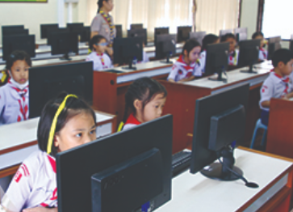
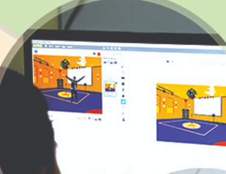
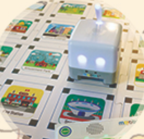
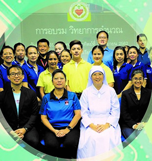

General Management
Technology and Public Relation
Encourage educational and potential of students in Technology according to The basic educational core curriculum
B.E.2560 we also develop student's ability to use technology in daily life along with having morality and ethics
like our school's vision have said. However the information technology departure also involved in designing the core
curriculum of technology class in every grade level. We provided all the equipment and resources for learning and
we also develop the teacher's standard to support the development of educational in thailand's 4.0 generation
After the student graduate 3rd grade they will be able to use technology devices safely such as computer, ipad and tablet.
They will be able to analyze how skeptical the information were and they are capable of thinking and make decision by using
logic. They will be able to use software program such as paint, Ms word, Ms powerpoint, Excel and have knowledge about each software program

When the student graduate 6th grade they will be able to code in basic the level by using the software program called "Scratch"
they will know how to code basic stuff such as Loop. However our school supports the student by providing equipment as an intructional media
called Education Robot kit to practice basic programming skills. The student will know how to use email and keep their information safely and understand
their right and other people's right in using internet. They also still get to learn Ms word, Ms powerpoint and Ms Excel.
When the student graduate 9th grade they will have ability to analyze the cause or the factor that effect on changing of technology and the
relationship of technology and science for solving problems and work improvement. They will be able to identify problems or need of the local community
to develop career, reshape the problems, collect and analyze the data and ideas related to the problem by considering about rights of intellectual property.
They will be able to use technology in daily life efficiently such as send and receive email, using google drive and make a presentation. They also will be able to understand
programming language such as Html and Javascript.
When the student graduate 12th grade. This is the last section of secondary that the student start to prepare for university.
So the technology classes will be more diverse than other classes, and our is aimed at providing
students with the opportunity to invent an innovation according to technology-related career paths so they can have more choices to choose in university
and additional computer classes are added for students in math - English stream so they can learn a wider variety about computer programs to maximize the student's potential.
Technology course we provide for secondary student (2020)
For all stream
1. Basic programming language (C language) and Coding.
2. Coding by using Scratch and create responsive web page
3. Graphic Design, Photoshop and Illustrator
4. Programming a relational database by using Ms acess
5. Programming a device control command code by using C language
6. Create an innovation that applied with a device control command code
7. Create a multimedia presentation by using video/sound editing skills
8. Using different types of social media such as writing blogs
9. Using cloud system such as Google Drive, Google Sheet, Google Doc, Google slide etc.
For Math - English stream
1. Create interactive code by Adobe Captivate
2. Creating visual effects by Adobe After Effect
3. Creating animation by using Flash Professional
4. Design a game, interactive code by using Flash Professional and A.S. scripts
5. Creating webpage
Technology Management, Public Relations and General Management
Technology Management and Public Relations, General Management, Technology and Public Relations,
SHC is an agency that develops and supports technology information services to promote and support the school's resistance in
teaching, management, etc.
that will help support all school departments to receive the best education.It is convenient to ensure that the work of the department-achieve
the goals as planned and improve the quality of school education,
technology work, and public works.
Accordingly, we organized the management structure into 7 agencies:
1. Technology Service Agency
2. Information Service Agency
3. Computer and Peripheral Service Agency
4. Visual Single Service Agency
5. Network Maintenance agency
6. Media and Publishing Agency for Publications

โรงเรียนพระหฤทัยคอนแวนต์ Praharuthai Convent School
94 ถนนสุนทรโกษา แขวงคลองเตย เขตคลองเตย กรุงเทพมหานคร 10110
หมายเลขโทรศัพท์ 02 671 9041-4 ติดต่อธุรการต่อ 100 หรือ 102 ติดต่อห้องการเงินต่อ 301
เปิดทำการทุกวันจันทร์-ศุกร์ 07.30-17.30 น. เสาร์ 08.30-15.30 น. เว้นวันหยุดราชการ
Website: https://www.shc.ac.th Facebook: โรงเรียนพระหฤทัยคอนแวนต์ Youtube Chanel: โรงเรียนพระหฤทัยคอนแวนต์ Praharuthai Convent School